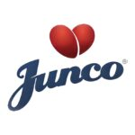
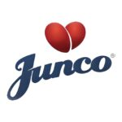

Sobre nós!
“Começamos em 2014 com 5 crianças em tratamento de quimioterapia, realizando passeios, visitas, aniversários e outras atividades. Com isso, acreditamos que pequenos gestos de gentileza podem mudar a vida de alguém, nosso combustível é a alegria de nossos pequenos! Hoje, atendemos mais de 80 crianças de Uberlândia e região, entre tratamento de quimioterapia, diagnóstico de doenças raras e cuidados paliativos.”


 
